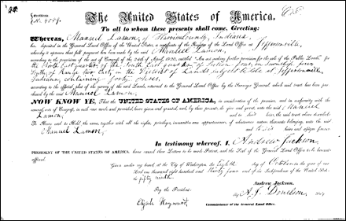

French Family Association
The Official Website of the Surname French
Chart #111, Mary Madoline French, 1789
Washington Co. or Greene Co., TN;
Gibson Co. and Harrison Co., IN
This chart updated by Mara French on 4/29/09. Numbers in brackets [ ] refer to the bibliography at the end of this chart. Send any corrections or additions to this chart to marafrench@mindspring.com. Revisions: 2009. Back to FFA Home Page.
Introduction
When I first started numbering FFA charts, I included both male and female lines; hence, this female line of a former FFA member. I’ve decided to keep these female lines in place so as not to confuse the numbering system.
As soon as the FFA finds the parents of Mary, this chart will no longer be maintained, but continue with her parent’s chart. Hopefully, it will connect into another male chart. Mary French’s parents seem not to be found anywhere. If you find more data, please email marafrench@mindspring.com.
History
Mary Madoline (or Magdaline) French was b. ca. 1789 perhaps in Frederick Co VA or possibly in Washington Co., or Greene Co., TN because she married in TN and all her 8 children were born in TN. She m. Manuel (or Emanual) Lamon ca. 1810. He was b. 1789 in TN [1], and d. 28 Dec 1869. They moved to Gibson Co., IN, probably after 1831 when her last child was born. Manuel / Emanuel was bondsman for his brother Joseph Lamon’s marriage to Elizabeth French.
The 1850 census shows Manuel Lamon (61) living with his wife Mary Lamon (61) and John Lamon (28), James R. Lamon (26), Martin M. Lamon (22), Elbert T. Lamon (19), plus members of the Jonson and Howerton families. They were living in Scott, District 45, Harrison Co., IN.
The 1860 census shows Manuel Lamon (71) living only with his wife, Mary Lamon (71) in Scott, Harrison Co., IN. They are both not found in Indiana in the 1870 census; however, not all spellings of Lamon were checked out (Laymon, Layman, Lemmon, Lehman). See their DNA website.

This certificate, dated 8 Oct 1834 in IN, shows that Manuel Lamon bought 40 acres for cash in Crawford, Harrison Co., IN.
Their son was William H. Lamon, b. 3 Nov 1811 in Knox, TN, d. 4 Feb 1901 in Princeton, Gibson Co., IN [1], m. Anna Brown (b. 1813) on 13 Oct 1831 in Harrison, IN, and lived with their children and grandchildren (all 8 of them born in IN) in Patoka, Gibson Co., IN, in 1860.
Tie Into FFA Chart #10 Found
See FFA Chart #10.
Elizabeth French, sister of Mary M. French, was b. between 1785-1790 and m1. James Joseph Layman on 23 Oct 1805 in Greene Co., TN [2]. There is no proof yet of the sister relationship other than Elizabeth and Mary both married Layman brothers in TN, and Emanuel and Joseph Lamon show up at witnesses on French deeds.
After a lot of research on Elizabeth French who married Joseph Layman/Lamon/Lemmons, I have to conclude that Elizabeth French m Joseph Layman/Lamon/Lemmons 23 Oct 1805 Greene Co TN and is the daughter of Henry French I. Elizabeth and Joseph Lemmons are shown on the 1850 Morgan Co AL census with other members of their family, one son William L. Lemmons is known. I have run across an article, "The Heritage of Morgan County, Alabama," page 447, that states,". . . Joseph Lamon (1784-1855) married Elizabeth French (c1781-1855) in Greene County, TN. She was the daughter of Henry French, a Rev. soldier who also received a land grant in Washington Co. TN but resided, at that time, in the neighboring county of Greene. Joseph and Elizabeth raised their family in TN." I have not found where in TN Joseph and Elizabeth raised their family, as they are not on any available Greene Co TN census.
The next generation Elizabeth French, m. George Brannon July 1832 Greene Co TN is evidently the daughter of Henry French II (son of Henry French I, and brother of Elizabeth French m. Joseph Laymon/Lamon/Lemmons) and Rhody Cotter. On the 1850 Greene Co TN census Elizabeth French and George Brannon's daughter, Rhody Brannon b 1836 is living in the Henry French II and Rhody Cotter French household [2].
Bibliography
[1] FFA member #235, Neva L. Stevens.
[2] Kelle Metz, kmetz268@olywa.net. If anyone has more info on Henry French I, and his daughter Elizabeth French I'd be very glad to get it. Joseph Laymon/Lamon/Lemmons was a nephew of my 5th great-grandfather, John Lemon Sr. Elizabeth French is in the second generation of FFA Chart #10.
I do find that a Joseph Layman/Lamon was listed on the 1830 Blount Co TN census as evidently was Henry French--info found on this forum says his son William L. French was b 4 Jul 1795 Blount Co TN (BTW would this William French's middle name be Lewis?). The next possible Joseph Layman/Lamon census listing I find is on the 1850 Morgan Co AL census. Joseph Lemmons, 66, VA; Elizabeth, 69, VA; William, 35, TN; Nathan, 12, AL; Margaret E., 10, AL; Martha A., 9, AL; James W.L., 7, AL; William B., 5, AL; and Sarah C., 2, AL. I also find a Thomas M. French listed on the 1850 Morgan Co AL census: Thomas M. French, 60, VA; Sally, 55, VA; John, 37, VA; Sidney (f), 34, VA; Mary, 9, AL; and Siss, 5, AL. This Thomas M. French is listed in Morgan Co AL on the 1830 census also.
I am a Lemmon-by-any-spelling researcher and have been working on the Joseph Layman/Lamon that m Elizabeth French 23 Oct 1805 for many years. The Joseph Lemmons listed on the 1850 Morgan Co AL census matches Joseph Lamon, son of David and Caty Lamon perfectly--David and Caty Lamon owned land in Shenandoah Co VA until 1787 and then moved to Cherokee Creek, Washington Co TN where David and Caty lived until their death. In the French info I have found here on Elizabeth French, she was b c1785/90 perhaps in Frederick Co VA. Her father Henry French is shown as purchasing 150 acres in Washington Co TN on Cherokee Creek in 1788. I also have some info from another French researcher as follows: "1772 George French Sr., Frederick County, Virginia sold a horse to Jacob French, sold cows to Henry French and a horse to David Lemmmon." Now, is the Henry French listed the same Henry that bought land in Washington Co TN in 1788? Is the David Lemmon the same David that bought land in Washington Co TN in 1787? Looks like good circumstantial evidence to me. Did Henry French and David Lemmon/Laymon/Lamon move to Washington Co TN together? David and Caty Laymon/Lamon had another son that married a French: Emanuel/Manuel Lamon b c1789 m Mary Madoline French, marriage date unknown. Could David Lemmon/Laymon/Lamon and Henry French be brothers-in-law? We do not know Caty Lemmon/Laymon/Lamon's maiden name.
Here's what I have on David Lamons (c1744 - 13 Dec 1829). This David is possibly a brother of John Lemmon Sr. aka Lemmon's Bend John. :-) Kelle Metz
David Lamons Sr. (c1744 - 13 Dec 1829 bur. Washington Co. TN.) + Catherine/Caty ( - 2 May 1826 bur. Washington Co. TN.) David and Catherine/Caty Lamon owned 156 acres in Shenandoah Co. VA. laying on the south side of the North fork of the Shenandoah River and cornered to John Davis and Jacob Bowman, this land was bought by “David Layman of County of York & State of Pennsylvania,” from John Clour and Margret his wife, 13 May 1783 (per e-mail from Steve Laymon 5/5/99) -- sold to Daniel Strickler 19 Apr 1787 (per e-mail from Frank W. Duff 4/5/99). David and Caty Lamon bought land in Washington Co. TN. from Hezekiah Bayless in 1787 wit: John Bayles, James Keele, and John Lemon per Washington Co. TN. land records. Earl Layman was the first to come up with the speculation that Rudolph Leman/Lehman of Hellem Twp., York Co. PA. was the father of David Lamon and Lemmon’s Bend John (see Earl’s e-mail dated 3/29/99) Steve Laymon follows up with his e-mail of 4/11/99, and together they come up with the following from Rudolph Lemen’s will dated 10 Oct 1766, will probated 1770: Rudolph Lehman + Frena, their children in probable order of birth: John; Nancy/Nanny; David; Barbara; and Christopher/Christian. David Sr. joins the Cherokee Creek Baptist Church Feb 1791 pg 20. Catherine/Caty Layman received by Experience (“Experience” was the act of being received into full fellowship by relating an “experience” of conversion and submitting to the ordinance of baptism by immersion) to Cherokee Creek Baptist Church Apr 1793 pg 22. David and Catherine/Caty Lamon’s children were:
a. Abraham (c1764 - ) (This birth date based on this being the Abraham on the 1850 Greene Co. TN. census. Abraham would be 27 in 1791 when his father joins the Cherokee Creek Baptist Church. Abraham is not listed in the Cherokee Creek Baptist Church minutes. I found only two notes on Abrahams in the Washington Co. TN. Deeds, 1775-1800. 1) We Jan 1794 sale of land to Christofer Hamons/Hammon adj Abraham Lamon. 2) 23 Jan 1799 Andrew McFarren purchased land adj Abraham Lemons. No Abraham in Washington Co. TN. marriage records—could Abraham already be married when he comes to Washington Co. TN.? He would be 23 at that time if we have his birth date close. BUT if this Abraham was the one listed on the 1779 Washington Co. TN. Tax list, than he was not married as this Abraham was listed as a single man.)
b. David Jr. ( - ) (Joins Cherokee Creek Baptist Church Feb 1791 pg 20; excommunicated 1 Aug 1795 pg 23. Did he get mad and leave? No marriage record, no land record—where is David Jr.?)
c. Christian (Charley) ( - ) m Eve Tossen 29 Jun 1813 Washington Co. TN. (Listed on Washington Co. TN. marriage records as Charley. Where did he go?)
d. Fanny (c1778 - 8 Apr 1832) m Peter Click (1776 - 27 Mar 1840) (Cherokee Creek Baptist Church records pg 146 show that “Fanny Click deceast April 8th 1832 aged 54,” and this is what I calculated her birth date on. Fanny’s husband Peter Click’s birth and death dates are also listed on pg 146. Fanny and Peter Click have one known daughter, Catharine Click m James Barr Cloyd 16 Feb 1832 per Washington Co. TN. marriage records. This James Barr Cloyd has a Sliger family connection in that his sister, Sarah Cloyd m Christian/Christopher Sliger, this Christian/Christopher Sliger m2 Rachel Broyles Lamon, widow of John Lamon wh was Catherine Click’s maternal Uncle Peter Click’s estate 17 Apr 1840 Inventory Purchases lists the following possible relatives Jacob Click; David Click; John Million Jr. (perhaps a son-in-law); William Cloyd (this was probably Catherine Click’s father-in-law); there is also a John Ingle listed.)
e. John (c1780 - May 1843) (this info per Michele and the Washington Co. TN. Inventories & Estates 1779-1871) + Rachel Broyles (1779 Culpeper Co. VA. - Do we have a date of death for Rachel?) Rachel m2 Christian Sliger 22 Nov 1849 Washington Co. TN. Rachel Broyles is d/o Cryrus Broyles and Mary Wilhoit. Washington Co. TN. Inventories & Estates 1779-1871 page 62-63 John Lamon’s Estate says that his death was May 1843 and he had 8 heirs to each $47.85 was paid; Emanuel Lamons received his portion (Note from Jstout…Emanuel went to Missouri). Here is the possible list of the 8 heirs listed in John Lamon's estate:
· 1) Isaac F. Lamon b c1810 TN. (per 1850 Greene Co. TN. census) m1 Lydia Bylerley/Benley? 19 Jun 1832 Washington Co. TN. m2 Rachel Bowman Allen 23 Aug 1849 Greenville, Greene Co. TN.
· 2) Rebecca Lammon b 1811 m Abraham Hartsell 26 Nov 1835 Washington Co. TN. (per Joanne)
· 3) Adam Lamons b c1813 TN. (per 1850 Washington Co. TN. census) m Mary Shepherd?
· 4) Emanuel Lamon b c1814/15 m Kesiah Hartsell 30 Dec 1835 Washington Co. TN. had the following children. (per Joanne Bledsoe) : 1. Martha Jane Lamon; 2. Isaac Newton Lamon; 3. Rachel Kesiah Lamon; 4. Dean Lamon; 5. Mary A. Lamon; 6. Nancy C. Lamon; 7. Judy E. Lamon; 8. Allen Thomas Lamon; and 9. Sarah E. Lamon.
· 5) Mary Lamon b 1815 m Benjamin Fowler 1845 (per Charline)
· 6) Catherine Lamon b c1817 m William Sliger 5 Sep 1837 Washington Co. TN.
· 7) Thomas Lamon b c1820 (perhaps this is the Thomas Lamon m L. Heines 12 Aug 1840 Washingto Co. TN. )
· 8) Nancy Jane Lemon b c1825 m James Johnson—Nancy J. Johnson is listed on the 1850 Greene Co. TN. Census house #1381, and is show as being b c1825 TN.)
f. Elizabeth ( b c1780/1790- ) m Jacob Varner (Jacob Varner also has a tie to the Sliger family—Jacob is shown as s/o Mary Sliger--Mary Sliger later m Michael Ingle 29 Apr 1793 Washington Co. TN. Mary Sliger was s/o Christian/Christopher Sliger m Rachel Broyles Lamon, Elizabeth Lamon's sister-in-law)
g. Joseph (c1785 - ) + Elizabeth French 23 Oct 1805 Greene Co. TN. (No land in Washington Co. TN.—not on 1830 Greene Co. TN. census—He went to Morgan Co. AL. bfr 1840 (per Roger Crane). Who are his children?)
h. Emanuel Lamon (c1789 per 1850 Harrison Co. IN. census - 28 Dec 1869 per head stone) m Mary French. Is this Mary French related to Elizabeth French m Joseph Lamon? Emanuel Laymon is shown as bondman for John Cole and Catherine Layman 1815 on Washington Co. TN. Marriage records and as a bondman for Samuel Lemmon m Lydia Booth 20 May 1817 Washington Co. TN. marriage records. Here are the children of Manuel Lamon and Mary French per Joy Mattli & Joy Lamon—I put them in the birth order given on the 1850 & 1870 Harrison Co. IN. census records–km.
· h.1. William L. Lamon (c1813 TN.-) m Ann/Anny Brown 13 Oct 1831 Harrison Co. IN.
· h.2. Mary Lamon (c1814 TN.-) m Reason Esarey 15 Dec 1842 Harrison Co. IN.
· h.3. David D. Lamon (12 May 1818-21 Feb 1904) {based on cemetery records}
· h.4. John Lamon (c1822 TN.-) m Elizabeth Stephenson 26 Sep 1850 IN.
· h.5. James Riley Lamon (24 Mar 1823 TN.-4 Sep 1856)
· h.6. Amy S. Lamon (c1826 TN.-) m Isaac Lang 21 Nov 1847 Harrison Co. IN.
· h.7. Martin M. Lamon (c1828 TN.-) m m1 Anna Breeden 20 May 1851 + m2 Mary J. Breeden 13 Feb 1861 – both marriages in Harrison Co. IN.
· h.8. Elbert T. Lamon (c1831 TN.-) m Priscilla Green 22 Nov 1854.
i. Catherine (c1790 per 1830 Crawford Co. IN. census - ) m John Cole 9 Aug 1814 Washington Co. TN. (On Washington Co. TN. marriage records). John Cole m2 Lydia Lemon 1 Jun 1846 Orange Co. IN. (is this Lydia Lemon the widow of Samuel Lemmons listed below?)
Children of Catherine Lamon and John Cole are (per Joe Seiffert):
· i.1. Elizabeth Cole (26 Mar 1809-10 Jan 1871 Crawford Co. IN.) m Bryant Breeden 8 Dec 1825 Crawford Co. IN.
· i.2. Jacob Cole (25 Mar 1810 TN.-2 Feb 1870 Davies Co. IN.) m1 Mariah Lemmon 30 Dec 1832 Crawford Co. IN. (could this be d/o Samuel Lemmons and Lydia Boothe listed below?)
· i.3. David Cole (16 May 1819-26 Oct 1903 Crawford Co. IN.) m1 Amelia Carolina Bird 24 Aug 1845 Orange Co. IN. m2 Mary Magdeline Briles aft.1897
· i.4. Sarah Cole (c1821-bfr.1852 m Samuel Bird 22 Mar 1838 Crawford co. IN.
· i.5. John Cole (c1823- ) m Elizabeth Bird 24 Aug 1851 Crawford Co. IN.
· i.6. Nancy Cole (c1834- ) m William Ballow 1853 Crawford Co. IN.
· i.7. Susanna Cole (c1836- )
· i.8. Catherine Cole ( - ) m Amos Breeden 26 Oct 1847 Crawford Co. IN.
· i.9. Franky "Fanny" Cole ( - ) m James Breeden 13 Jun 1850 Crawford Co. IN.
· i.10. Margaret Cole ( - ) m David Jones
· i.11. Mary Ann Cole ( - ) m Lorenzo D. Hedden 26 Aug 1841 Crawford Co. IN.
j. Samuel Lemmons listed in the Washington Co. TN. Marriage records: Samuel Lemmon m Lydia Boothe, 20 May 1817, bondman Emanuel Lamons. This could be the Samuel Lemon listed on the 1830 Crawford Co. IN. census? If so his possible birth date is 1790-1800. Possible children of Samuel Lamon and Lydia Boothe:
1) Mariah Lemmon m Jacob Cole 30 Dec 1832 Crawford Co. IN.
2) Aaron Lemmon
3) Hiram Lemmon
4) Addison Lemmon
5) Francis Lemmon
6) Mary Angeline Lemmon
k. Jacob (6 Sep 1791 Washington Co. TN. - aft1850) (birth per Roger and 1850 Washington Co. TN. census, death per Michele) m Catherine Sliger (c1794 Washington Co. TN. - 1860 ) (per Roger) (Catherine Sliger and Christian/Christopher Sliger, m John Lamon’s widow Rachel Broyles Lamon, are niece and Uncle respectively. Jacob Varner is also related to Catherine Sliger and Christian/Christopher Sliger in that he is Christian/Christopher's nephew, and Catherine's cousin through Mary Sliger b c1765 PA. d c1835 TN.). Jacob is listed in the Cherokee Creek Baptist Church records as a member in 1842 pg 11, 2 Feb 1850 excluded Jacob Lamon for getting drunk pg 89, 5 Mar 1859 Jacob Lemon is shown as Sexton pg 113, and is show as being expelled on pg 132 no date shown; Catherine Lamon is shown as being dismissed pg 132, no date noted. There are lots of Slingers listed in the index of the church records. Jacob and Catharine had the following children
(some info per Michele and some per Roger):
· k.1. Jeremiah Lamon (21 Oct 1822 - ) + Mary Jane Lovelace 29 Dec 1852 Washington Co. TN. (in Washington Co. TN. marriage records. Jeremiah Lamon J.P. 1856 in Washington Co. TN. marriage records. Jeremiah Lamons M.G. 1858 in Washington Co. TN. Marriage records. Mary J. Lovles was received by baptism 7 Mar 1852 Cherokee Creek Church records pg 93. Jeremiah was shown as a member of the church pg 15, First Sunday in Aug 1847 “church withdrew their fellowship from Jeremiah Lemon at his own request,” pg 86, “Jeremiah Lamon Expeled,” pg 132 no date shown.);
· k.2. Rebecca Lamon (c1826 TN. - ) + John Cunningham 4 Nov 1844 Washington Co. TN. (On Washington Co. TN. marriage records. Rebecky Lamon shown in Cherokee Creek Baptist church and is dismissed pg 14 no date given.);
· k.3. William J. Lamon (c1830 Washington Co. TN. - ) (per Michele) (There’s a William J. Lamon m Sarah E. Kyker 25 Oct 1854 Washington Co. TN. Marriage records, could this be the same William? William is shown as a member of Cherokee Creek Baptist church pg 10, pg 14, 3 Aug 1850 “granted William Lamon a letter of dismission,” pg 90, shows that William Lemon paid $1.00 to Cate & Bayless for 1853 pg 101.);
· k.4. Sarafina “Sarah” Lamon (1 Apr 1830 - 21 Nov 1915) (per Roger) + Alexander Cunningham 11 Jan 1847 Washington Co. TN. (per Michele) (on Washington Co. TN. marriage records);
· k.5. Isaac (per Michele) ( - ) + Elizabeth McCoy 16 Aug 1849 (on Washington Co. TN. Marriage records.)
[3] Joyce Lamon Walden, lamons@apex.net (good in 1999).
[4] Sharon LaMon, LaMon4@aol.com